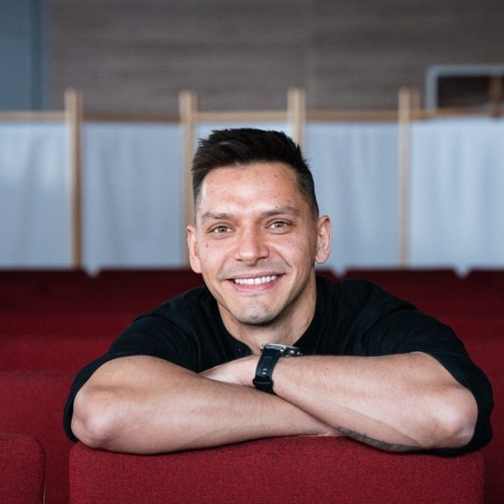

Tomasz Stanisz
Software Engineer & Tech Lead
Poland · Remote · Regular US-hours overlap
Profile
Software engineer combining frontend architecture, full-stack development and technical leadership. Experience spans backend-configured CMS interfaces, streaming applications, E2E automation and an event-booking MVP, supported by an earlier career in finance and accounting.
Experience
Orange Polska
Software Engineering & Technical Leadership
– Present
- Design and develop the React and TypeScript frontend architecture of an internal CMS, with navigation, actions, forms and data grids driven by backend configuration and JSON schemas.
- Build schema-defined forms with RJSF custom fields and widgets, using Material UI and MUI X Data Grid Pro for the interface and grids.
- Provided technical guidance and code review for three CMS developers.
- Established a Cypress E2E project from scratch with Page Object Model, DRY shared test logic and parallel execution; trained two junior testers and reviewed their code during its first year.
- Built a streaming-platform feedback form and backend submission flow that makes user opinions and ratings available to the Product Owner.
TheEventa
Tech Lead · Concurrent role
MVP v1 under development
– Present
- Lead application architecture and development across the Next.js frontend, NestJS backend, internal admin panel and Playwright E2E project.
- Lead workflows for authentication/SSO, event objects and spaces, organizations, assets, wizard forms and pricing recalculated from selected options.
- Own the frontend design system and Storybook, alongside the landing page and blog.
- Review code, feature implementations and manual and automated tests, using agent-assisted workflows with personal oversight.
DareDrop
Junior Full Stack Developer
May–June 2022
Selected skills
Web and mobile
React, TypeScript, JavaScript, Next.js, React Native.
Backend and additional languages
NestJS; backend contributions in Go; Python used as needed.
UI architecture
React JSON Schema Form (RJSF), Material UI, MUI X Data Grid Pro, Storybook and design systems.
Quality
Cypress, Playwright, Page Object Model, parallel E2E execution and code review.
Finance and accounting background
Earlier finance and accounting experience at Accenture, Marsh McLennan, AkzoNobel and Tate & Lyle, covering financial reporting, reconciliations and month-end processes. This provides practical domain context for financial and business software.
Community leadership
I lead ATOM (Akademia Tworzenia Oprogramowania), a programming community with 900 members.
Education and certification
University of Lodz
Master's, Finance and Accounting
2012–2014
Bachelor's, Finance and Accounting
2009–2012
Associate Cloud Engineer Certification — Google
Issued July 2024 · Expires July 2027
Language
English — approximately C1, used professionally in international environments.